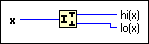
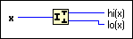

Split Number Function
Owning Palette: Data Manipulation Functions
Requires: Base Development System
Breaks a number into its component bytes or words.

 Add to the block diagram Add to the block diagram |
 Find on the palette Find on the palette |
Owning Palette: Data Manipulation Functions
Requires: Base Development System
Breaks a number into its component bytes or words.

| Add to the block diagram |
Find on the palette |